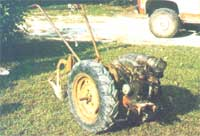

With a little bit of patience and luck, you just might be able to turn a number of your farmstead or garden chores over to an amazing mechanical mule that goes by the name of…
A few months back a friend pulled into our driveway and leapt from his pickup… grinning fit for payday in county fair week. “Will you just look at this?” he asked, waving to the truck bed. Well, we strolled over (not wanting to appear too interested until a rusty pile of junk that looked for all the world like the result of a head-on collision between a runaway lawn mower and a tractor.
“Great!” we both exclaimed, exchanging glances and trying to figure out just what the device might be. However, our buddy was apparently too overcome with enthusiasm to take note of that hesitation.
"It's a David Bradley walking tractor," he gloated . . . and then went on to tell us a little about the machine. It seems that Sears, Roebuck and Co. produced these remarkable little iron horses-between 1933 and 1964-as part of a large family of agricultural machinery bearing the same name. Now there's no way of knowing just why that firm stopped selling the "DB's", but our friend guesses it was because the tractors were just too danged well made. No one, he asserts, would ever be likely to have to order a second David Bradley.
We were still somewhat skeptical, but-seeing as how the dilapidated-looking implement had cost our pal only $40 (and had been purchased with seven different attachments!)-we decided to withhold judgment until the tractor could be cleaned up and put to the test. As it turned out, we didn't have to wait long. Within two days the DB was overhauled and painted. An 8" turning plow was attached for the occasion, and with no little ceremony the mechanic who’d fined-tuned the engine fired her up and engaged a gear.
We watched in amazement as the David Bradley dragged that 6'4", 250-pound individual some 20 feet before he could disengage the transmission . . . and it plowed a beautiful furrow in the tough, overgrown turf while doing so. Suffice it to say that we tell in love.
It took us six weeks of want-ad watching to locate our DB, but the tractor was all together, had a recently overhauled power-plant, came with three accessories, and set as back a reasonable $65. Within two more months we'd managed to accumulate three additional attachments, all from a local scrap-metal salvage yard, for a total cost of just$10.
Now there's probably little point in going on and on about our David Bradley (although we could continue for quite a while . . . even if we did nothing more than list the number of different jobs that the machine can be equipped to tackle!). After all, you're probably a lot more interested in how to go about getting one of the mechanical mules of your own. And if our experience is at all representative, you shouldn’t have much trouble doing so.
Begin your search by getting into the habit of scanning your newspaper or tabloid “shopper” ads. Then, if that doesn’t turn up a reasonably priced David Bradley in a short time, you might want to check your area’s tractor dealers (they take the dangedest things in trade sometimes.) Don’t neglect junkyards or farm auctions, either. And should the little workhorse you do find turn out to have a blown engine, don’t despair. As long as the transmission is still strong (they don’t ever seem to go out, but try rolling the tractor -in neutral-to test it … if there’s a steady click, click, click as you push it along, the tranny is likely jus fine), almost any used 3- to 8-horsepower engine can be hooked up to run the tractor.
If the powerplant on this workhorse needs replacement, almost any 3- to 8-HP engine will do.
Of course, there are some fine modern walking tractors on the market today ... as well as a number of very impressive small four-wheel workhorses. But if you're on a tight budget, have a talent for scavenger hunting, and don't mind occasionally having to manhandle an implement that's not equipped with a reverse gear (that's the only real complaint we have with the DB), it'd be hard to imagine a better farmstead helper ... to handle your plowing, disking, tilling, scraping, mowing, bush-hogging, and more!
|
 STAFF PHOTOS The David Bradley tractor, made between 1933 and 1964, is hardworking and inexpensive. |
|
|